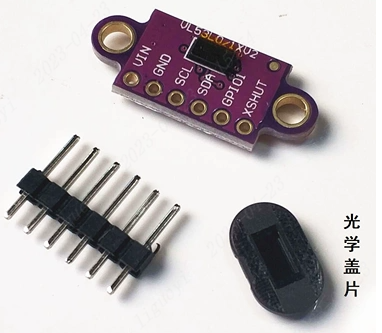

<!DOCTYPE lake>
<p data-lake-id="u11b2689c" id="u11b2689c"><span data-lake-id="u900e0f91" id="u900e0f91">VL53L0X是 ST 公司推出的新一代 ToF 激光测距传感器，采用了第二代 FlightSenseTM技术，利用飞行时间（ToF）原理，通过光子的飞行来回时间与光速的计算，实现测距应用。较比上一代 VL6180X，新的器件将飞行时间测距长度扩展至 2 米，测量速度更快，能效更高。除此之外，为使集成度过程更加快捷方便， ST 公司为此也提供了 VL53L0X 软件 API（应用编程接口）以及完整的技术文档，通过主 IIC 接口，向应用端输出测距的数据，大大降低了开发难度。</span></p><p data-lake-id="u8d47ddd0" id="u8d47ddd0"><span data-lake-id="u445268de" id="u445268de">VL53L0X飞行时间测距传感器是新一代激光测距模块，VL53LOX是完全集成的传感器，配有嵌入式红外、人眼安全激光，先进的滤波器和超高速光子探测阵列，测量距离更长，速度和精度更高。</span></p><p data-lake-id="u2106baf5" id="u2106baf5"><span data-lake-id="ub90509a4" id="ub90509a4"> VL53L0X的感测能力可以支持各种功能，包括各种创新用户界面的手势感测或接近检测，扫地机器人、服务性机器人的障碍物探测与防撞系统，家电感应面版、笔记本电脑的用户存在检测或电源开关监控器，以及无人机和物联网(IoT)产品等。</span></p><h2 data-lake-id="wsOpZ" id="wsOpZ"><span data-lake-id="uf440d2cb" id="uf440d2cb">模块来源</span></h2><article class="lake-columns" data-lake-id="u4c16d353" id="u4c16d353"><article class="lake-column-item" data-lake-id="ud4f98d51" id="ud4f98d51" style="width: 50.000000%"><h3 data-lake-id="nqVsq" id="nqVsq"><span data-lake-id="ud647fef9" id="ud647fef9">采购链接</span></h3><p data-lake-id="u464d33c4" id="u464d33c4"><a data-lake-id="u16c1ec38" href="https://item.taobao.com/item.htm?spm=a1z10.3-c-s.w4002-19589090137.10.690136b4Dw8DLW&amp;id=611048504034" id="u16c1ec38" rel="noopener noreferrer" target="_blank"><span data-lake-id="u60a74758" id="u60a74758">VL53L0X V2激光测距传感器模块 ToF飞行时间测距 配套光学盖片</span></a></p><h3 data-lake-id="Snk4v" id="Snk4v"><span data-lake-id="u75ddaac1" id="u75ddaac1">资料下载</span></h3><a class="yuque-card-link" href="https://www.yuque.com/attachments/yuque/0/2024/zip/27903758/1717422729802-6d2d4f3b-e6f7-43e2-a292-a1035dff1a6e.zip">localdoc：2.15-立创开发板天空星-VL53L0X激光测距传感器移植成功案例.zip</a><h3 data-lake-id="QMLRO" id="QMLRO"><span data-lake-id="u316c0ab9" id="u316c0ab9">规格参数</span></h3><p data-lake-id="uf05b7bb4" id="uf05b7bb4"><strong><span data-lake-id="ue7693ae1" id="ue7693ae1">工作电压</span></strong><strong><span data-lake-id="u40a92450" id="u40a92450">： 2.6 ~ 3.5 V</span></strong></p><p data-lake-id="u54a26fec" id="u54a26fec"><strong><span data-lake-id="u834b0bdf" id="u834b0bdf">温度范围:2m</span></strong></p><p data-lake-id="uf1265268" id="uf1265268"><strong><span data-lake-id="ub145b128" id="ub145b128">通信协议：I2C</span></strong></p><p data-lake-id="u57cd58c7" id="u57cd58c7"><strong><span data-lake-id="uf681522e" id="uf681522e">I2C地址：</span></strong><span data-lake-id="u9436fee8" id="u9436fee8">0X52</span></p><p data-lake-id="ue41267be" id="ue41267be"><strong><span data-lake-id="u1b171b6c" id="u1b171b6c">管脚数量：6</span></strong><span data-lake-id="u189c7e13" id="u189c7e13"> Pin（2.54mm间距排针）</span></p></article><article class="lake-column-item" data-lake-id="u2e5e74fb" id="u2e5e74fb" style="width: 50.000000%"><p data-lake-id="uace55eb7" id="uace55eb7"></p></article></article><p data-lake-id="uf42f6eaa" id="uf42f6eaa"><br/></p><h2 data-lake-id="xA4qL" id="xA4qL"><span data-lake-id="u044a39c2" id="u044a39c2">模块接线</span></h2><table class="lake-table" data-lake-id="uNON7" id="uNON7" margin="true" style="width: 723px"><colgroup><col width="89"/><col width="80"/><col width="554"/></colgroup><tbody><tr data-lake-id="u7079e9a7" id="u7079e9a7"><td data-lake-id="uae385f73" id="uae385f73" style="background-color: rgb(239,240,241)"><p data-lake-id="u63d6a8e2" id="u63d6a8e2" style="text-align: center"><strong><span class="lake-fontsize-12" data-lake-id="uae909c10" id="uae909c10">VL53L0X</span></strong></p></td><td data-lake-id="u25e0e33e" id="u25e0e33e" style="background-color: rgb(239,240,241)"><p data-lake-id="uc5cd8dd7" id="uc5cd8dd7" style="text-align: center"><strong><span class="lake-fontsize-12" data-lake-id="u5671b7e3" id="u5671b7e3">天空星</span></strong></p></td><td data-lake-id="u0d31a5e6" id="u0d31a5e6" style="background-color: rgb(242, 243, 245)"><p data-lake-id="u11357647" id="u11357647" style="text-align: center"><strong><span class="lake-fontsize-12" data-lake-id="ud3922300" id="ud3922300">接线图</span></strong></p></td></tr><tr data-lake-id="udf896bed" id="udf896bed"><td data-lake-id="u7404a6e0" id="u7404a6e0"><p data-lake-id="ue79b0f4a" id="ue79b0f4a" style="text-align: center"><span class="lake-fontsize-12" data-lake-id="uf64ffb27" id="uf64ffb27">VIN</span></p></td><td data-lake-id="u8b0a5d4a" id="u8b0a5d4a"><p data-lake-id="u7db7e62a" id="u7db7e62a" style="text-align: center"><span class="lake-fontsize-12" data-lake-id="u743ed59f" id="u743ed59f">3V3</span></p></td><td data-lake-id="u5b7c3325" id="u5b7c3325" rowspan="5"><p data-lake-id="uf2a9bfec" id="uf2a9bfec" style="text-align: center"><br/></p></td></tr><tr data-lake-id="ue3e04742" id="ue3e04742"><td data-lake-id="u99a04ac5" id="u99a04ac5"><p data-lake-id="u66d99e62" id="u66d99e62" style="text-align: center"><span class="lake-fontsize-12" data-lake-id="uab187991" id="uab187991">GND</span></p></td><td data-lake-id="uc472937b" id="uc472937b"><p data-lake-id="u86a8df5b" id="u86a8df5b" style="text-align: center"><span class="lake-fontsize-12" data-lake-id="ud8f93aeb" id="ud8f93aeb">GND</span></p></td></tr><tr data-lake-id="u592d0753" id="u592d0753"><td data-lake-id="u69e032d4" id="u69e032d4"><p data-lake-id="ue36fd488" id="ue36fd488" style="text-align: center"><span class="lake-fontsize-12" data-lake-id="ua7012ac9" id="ua7012ac9">SCL</span></p></td><td data-lake-id="ub412d4b9" id="ub412d4b9"><p data-lake-id="u312c1f55" id="u312c1f55" style="text-align: center"><span class="lake-fontsize-12" data-lake-id="ud709f677" id="ud709f677">PB6</span></p></td></tr><tr data-lake-id="ua995a5ac" id="ua995a5ac"><td data-lake-id="ud753ac6a" id="ud753ac6a"><p data-lake-id="u17bdf5ce" id="u17bdf5ce" style="text-align: center"><span class="lake-fontsize-12" data-lake-id="u4f7ad3a7" id="u4f7ad3a7">SDA</span></p></td><td data-lake-id="udbf60754" id="udbf60754"><p data-lake-id="u9bfbbfc7" id="u9bfbbfc7" style="text-align: center"><span class="lake-fontsize-12" data-lake-id="ue63fef2f" id="ue63fef2f">PB7</span></p></td></tr><tr data-lake-id="u03f47081" id="u03f47081"><td data-lake-id="uc8c58b64" id="uc8c58b64"><p data-lake-id="ufe56a8a7" id="ufe56a8a7" style="text-align: center"><span class="lake-fontsize-12" data-lake-id="u70ed9eb3" id="u70ed9eb3">XSHUT</span></p></td><td data-lake-id="u38ced1b3" id="u38ced1b3"><p data-lake-id="u140d11c4" id="u140d11c4" style="text-align: center"><span class="lake-fontsize-12" data-lake-id="u4b8c6422" id="u4b8c6422">PB4</span></p></td></tr><tr data-lake-id="uf3f9524d" id="uf3f9524d"><td colspan="3" data-lake-id="ue33999d5" id="ue33999d5"><p data-lake-id="u2a012fdd" id="u2a012fdd" style="text-align: center"><strong><span class="lake-fontsize-12" data-lake-id="u05e7bc0c" id="u05e7bc0c">各引脚连接</span></strong></p></td></tr></tbody></table><p data-lake-id="uf623eeeb" id="uf623eeeb"><span data-lake-id="u10006428" id="u10006428">​</span><br/></p><h2 data-lake-id="E9lZz" id="E9lZz"><span data-lake-id="uccf28612" id="uccf28612">参考示例</span></h2><p data-lake-id="uecd5e9f5" id="uecd5e9f5"><a class="yuque-card-link" href="../../_assets/0bcdbac303870ee32d9a257c.7z">GD32_VL53L0X.7z</a></p>